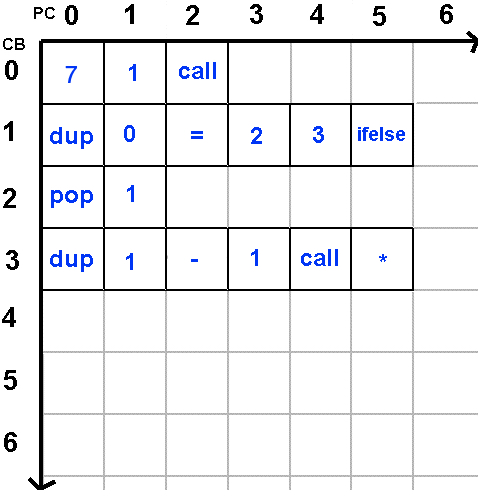

VOLVE 5.0
VOLVE 5.0
Genetics
The genetic programming language used by Evolve is called KFORTH. All KFORTH programs are compiled into a tabular representation. Each element of the table is either a number or an instruction. Each row is called a "code block". The first row is special because this is where execution always starts.
A KFORTH program begins executing at (0, 0) (code block 0, program counter 0). If the table element contains a number, it is pushed on the data stack, otherwise the instruction is executed.
When the end of a row is reached, the previous location is removed from the call stack. If the call stack is empty, the program has terminated.
The call instruction, as its name implies, "calls" a new code block. This is anaologous to a function call, or subroutine call in most languages. There are also two conditional call instructions: if and ifelse. These instructions call a code block depending on a condition. These instructions transfer control to a new code block (after first saving the current location).
To visualize the tabular layout of a KFORTH program, consider this source code:
;
; Compute factorial(7), using a recursive algorithm
;
main:
{
7 fact call
}
;
; Recursive factorial algorithm:
; ( n -- factorial(n) )
;
fact:
{
dup 0 =
{ pop 1 }
{ dup 1 - fact call * } ifelse
}
|
This will be compiled into the following table. All labels, nesting and comments (which are for human convenience) are absent:
Mutations operate on this tabular structure. A simple mutation is to pick two random entries and swap them. Or two random rows can be swapped. etc...
The tabular structure of compiled KFORTH programs makes it very fast to apply a mutation to a program. Very little error checking must be performed. Any weird and wacky random transformation to this table will result in valid KFORTH program.
During sexual reproduction two genetic programs are combined. We accomplish this by interlacing code blocks from the first parent with the second parent. (Parent 1 donates her even numbered code blocks and parent 2 donates his odd numbered code blocks).
To learn more, see the description of the KFORTH language.